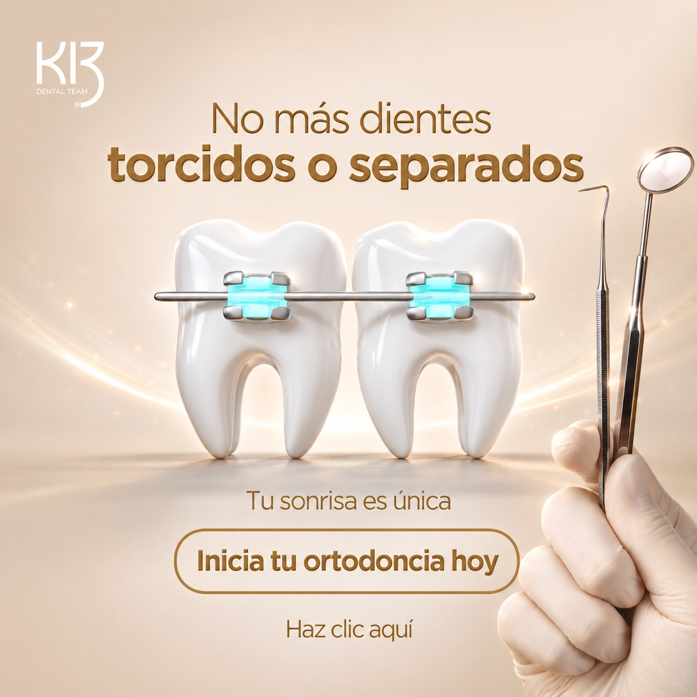

Hablarle a cada público
Ideas creativas
Concepto
La doctora a cámara responde, una por una, las dudas que los papás hacen apenas piensan en ponerle brackets al hijo. No le vende al papá: le resuelve el miedo. Es exactamente lo que hace un referido — replica la confianza que convierte.
Por qué funciona
El papá no agenda porque no sabe, y no pregunta por pena. El video le contesta antes de que tenga que escribir. Y como responde la especialista, gana autoridad sin decir "somos los mejores".
Guion · doctora a cámara
"Doctora, ¿a mi hijo le va a doler ponerse los brackets?" Los primeros días va a sentir presión y algo de molestia, es normal, es el diente empezando a moverse. No es un dolor fuerte y se maneja fácil. En dos o tres días ya ni se acuerda que los tiene.
"¿Qué cosas no va a poder comer?" Muy pocas. Nada demasiado duro ni pegajoso: chicle, hielo, dulces masticables. Del resto come casi normal.
"¿A qué edad es el momento ideal?" Esta es la más importante. Suele ser cuando ya cambió todos los dientes de leche, por ahí entre los doce y los catorce. Esperar de más no siempre ayuda: a veces vuelve el tratamiento más largo. Por eso, si tu hijo ya está en esa edad, vale la pena revisarlo ahora.
"¿Cuánto tiempo dura?" Depende de cada caso, por eso primero lo valoramos. Desde la primera cita te explicamos con claridad qué necesita tu hijo.
Si te quedó otra duda, escríbeme. Yo misma te respondo y te digo cómo agendar la valoración de tu hijo en K13.
Concepto
La doctora le da al papá una lista de señales visibles que puede detectar él mismo mirando a su hijo. Lo convierte en observador — y al observar, encuentra motivo para escribir.
Por qué funciona
El papá no sabe distinguir entre "dientes chuecos normales" y "esto hay que tratarlo". El video le da los criterios. Y varias señales sorprenden porque no las asociaba con ortodoncia — eso genera el "uy, mi hijo hace eso".
Guion · doctora a cámara
"Doc, ¿cómo sé si mi hijo necesita ortodoncia?" Es la pregunta que más me hacen los papás. Te doy las señales para que las revises tú mismo.
Si ya tiene entre doce y catorce y se le cayeron todos los dientes de leche, es la edad de revisarlo.
Míralo cuando sonríe: dientes montados o con espacios grandes no se corrigen solos. Y si al morder los de arriba no cierran bien con los de abajo, hay algo en la mordida que revisar.
Ojo también si respira por la boca o duerme con la boca abierta. También cuenta.
¿Viste una sola de estas? Escríbeme y lo revisamos a tiempo.

Concepto · Ortodoncia invisible
Repetimos el formato que ganó en jóvenes —el post estático— con un ángulo nuevo: ortodoncia invisible. Al joven de 18–22 le vende la estética: corregir la sonrisa sin brackets metálicos, casi sin que se note. El gancho de pago a cuotas va de apoyo.
Titular de la pieza
"Alinea tu sonrisa sin que nadie lo note." · Ortodoncia invisible · Con pago a cuotas.
Caption
Tu sonrisa derecha, sin andar con brackets a la vista 🦷
La ortodoncia invisible corrige poco a poco, casi sin que se note, y te la puedes quitar para comer y lavarte los dientes.
Con pago a cuotas para que empezar no sea el problema. Escríbenos y te contamos si eres candidato 👇